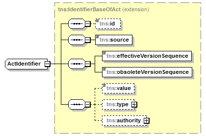

| diagram |  | ||||
| namespace | http://openiz.org/model | ||||
| type | extension of tns:IdentifierBaseOfAct | ||||
| properties |
|
||||
| children | tns:id tns:source tns:effectiveVersionSequence tns:obsoleteVersionSequence tns:value tns:type tns:authority | ||||
| used by |
|
||||
| source | <xs:complexType name="ActIdentifier" mixed="false"> <xs:complexContent> <xs:extension base="tns:IdentifierBaseOfAct"/> </xs:complexContent> </xs:complexType> |